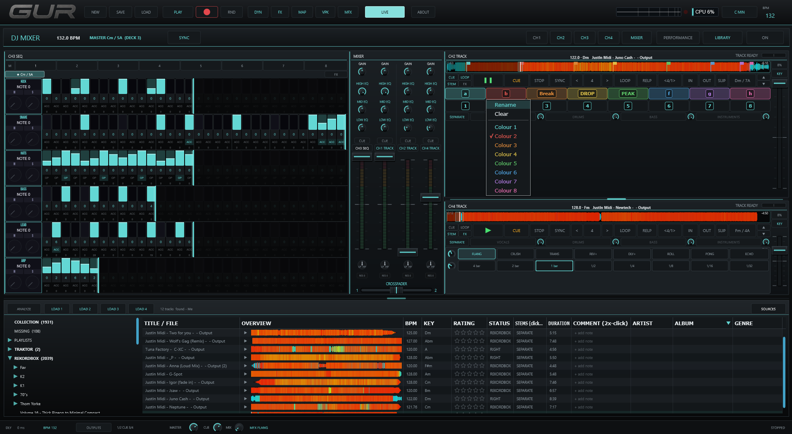

A standalone instrument for live performance — drum machine, polyphonic synthesizer, four decks, live throw FX, and a sample-accurate sequencer in one app.
THE NATIVE APP
A glance. Standalone Windows / macOS, low-latency, ASIO + MIDI.


TRY IT IN YOUR BROWSER
The browser-based reference. Click LIVE inside the frame to start, then use the mixer and sequencer to build beats.
Press LIVE inside the frame to start audio, then tap FULLSCREEN for the full UI. Best in Chrome / Edge / Firefox on desktop. The full native app (low-latency, ASIO, MIDI) launches when it's ready.
WHAT'S INSIDE
One app. No DAW. No host. No plugins.
EIGHT-VOICE SEQUENCER
Kick, snare, hats, bass, chord, arp, pad, lead. Each with independent loop length on a 32-step grid. Sample-accurate timing.
FOUR-DECK DJ MODE
Two sequencer decks (A/B) plus two audio-file track decks (A/B). Key-locked time-stretch, beat-loops, sync, slip — the CDJ workflow, in software.
STEM SEPARATION
Offline 4-stem separation per track — vocals, drums, bass, other. Mute and solo straight from the deck pads.
LIVE THROW FX
Hold-to-engage pad rack — flanger, crusher, reverb-plus, delay-plus, gate, loop, high-pass sweep, glitch. Designed for live drops.
MIDI CONTROLLER MAPPING
Generic, table-driven MIDI Learn. Works out of the box with the Traktor Kontrol S2 MK2; map any controller to any function.
CUE OUTPUT
Per-pattern cue routing to channels 3/4. Pre-listen and arrange transitions without leaving the box.
PLATFORMS
21ST CENTURY ARTISAN
We build machines for the stage. Virtual and physical. Standalone, low-latency, tuned for live use. GUR is our debut.
Built by Nadav Hecht Drayson
contact@21stcenturyartisan.com